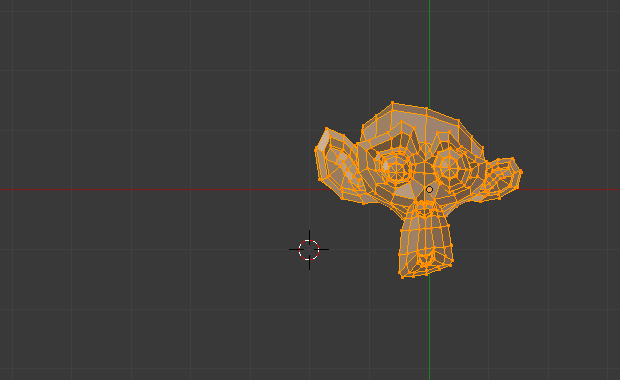

Mirror¶
Reference
| Mode: | Edit Mode |
|---|---|
| Menu: | |
| Hotkey: | Ctrl-M |
The Mirror tool mirrors a selection across a selected axis.
The Mirror tool in Edit Mode is similar to Mirroring in Object Mode. It is exactly equivalent to scaling by -1 vertices, edges or faces around one chosen pivot point and in the direction of one chosen axis, only it is faster/handier.
After this tool becomes active, select an axis to mirror the selection on entering X, Y, or Z.
You can also interactively mirror the geometry by holding the MMB and dragging in the desired mirror direction.
Axis of Symmetry¶
For each transformation orientation, you can choose one of its axes along which the mirroring will occur.
As you can see, the possibilities are infinite and the freedom complete: you can position the pivot point at any location around which we want the mirroring to occur, choose one transformation orientation and then one axis on it.
Pivot Point¶
Pivot points must be set first. Pivot points will become the center of symmetry. If the widget is turned on it will always show where the pivot point is.
In Fig. Mirror around the individual origins. the pivot point default to median point of the selection of vertices in Edit Mode. This is a special case of the Edit Mode as explained on the pivot point page.

Mesh after mirrored along X axis. |
{kind=link}
{kind=link}
In Fig. Mirror around the 3D Cursor. the pivot point is the 3D Cursor, the transformation orientation is Local, a.k.a. the Object space, and the axis of transformation is X.
{kind=link}
Transformation Orientations¶
Transformation Orientations are found on the 3D View header, next to the Widget buttons. They decide which coordinate system will rule the mirroring.
Mirror Vertex Group¶
Reference
| Mode: | Edit Mode |
|---|---|
| Menu: |
This tool works only with a perfectly symmetrical mesh (along the local X axis). Those vertices that have no corresponding vertex on the other side will not be affected.
- Mirror Weights
- With this option checked, every selected vertex receives the group/weight information of its symmetrical counterpart. If both vertices are selected, it will be a group/weight information exchange; if only one is selected, information from the unselected will be copied into the selected one, that loses its own information. Information on group/weight is passed for the active group only, unless All Groups is checked, in which case it is passed for all groups.
- Flip Groups Names
- Works with selected vertices that belong to vertex groups with “symmetrical names” (with components like “L”, “R”, “right”, “left”). All selected vertices that belong to the active group, or to the symmetrical of the active group, will have their assignation to that group replaced by an assignation to the symmetrical one; however, its weight will be preserved.
- All Groups
- If All Groups is checked, all assignations to these kind of groups will be replaced by the symmetrical counterpart, also keeping the old weights.
- Topology Mirror
- Mirror for meshes which are not fully symmetric. See here for more information.
Usually only one of those operations (Mirror Weights or Flip Groups Names) will be performed, though you can activate both at the same time, if you know what you are doing (these two operations could even cancel each other).